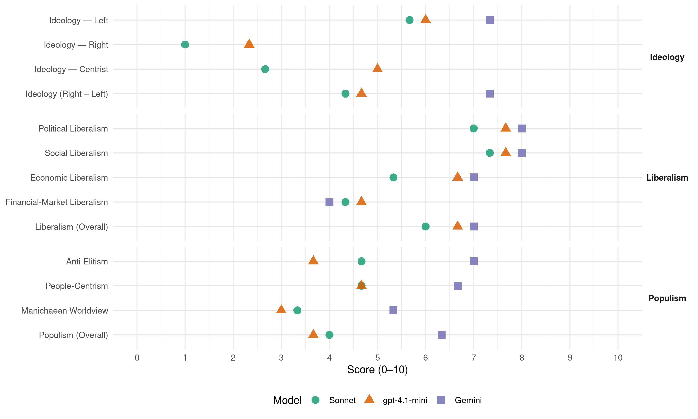

SDP BiH (Bosnia-Herzegovina, 2018)
manifesto_id 79321_201810
Get full text: This site shows derived annotations and short verbatim quotes only. The full manifesto text is © Manifesto Project / WZB — obtain it via manifesto-project.wzb.eu using the manifesto_id above.
Headline scores
| Dimension | Sonnet | gpt-4.1-mini | Gemini |
|---|---|---|---|
| Populism (Overall) | 4.0 | 3.7 | 6.3 |
| Anti-Elitism | 4.7 | 3.7 | 7.0 |
| People-Centrism | 4.7 | 4.7 | 6.7 |
| Manichaean Worldview | 3.3 | 3.0 | 5.3 |
| Ideology (Right − Left) | 4.3 | 4.7 | 7.3 |
| Liberalism (Overall) | 6.0 | 6.7 | 7.0 |
| Political Liberalism | 7.0 | 7.7 | 8.0 |
| Social Liberalism | 7.3 | 7.7 | 8.0 |
| Economic Liberalism | 5.3 | 6.7 | 7.0 |
| Financial-Market Liberalism | 4.3 | 4.7 | 4.0 |
Evidence per dimension
Economic Liberalism
Gemini · score 6.0 · mixed · chunk 1
“smanjenjem ukupnih poreznih opterećenja realnog sektora, a posebno direktnih poreza na rad”
Naš plan je da u okviru porezne re-forme, smanjenjem ukupnih poreznih opterećenja realnog sektora, a posebno direktnih poreza na rad, smanjimo sivu ekonomiju, te kreiramo uslove za rast zaposlenosti, plata, investicija, proizvodnje i izvoza
Gemini · score 5.0 · mixed · chunk 2
“socijalno odgovornoj tržišnoj privredi”
Hercegovine zasnovan na socijalno odgovornoj tržišnoj privredi, socijalnom blagostanju
Gemini · score 7.0 · verified · chunk 3
“omogućiti privatizacije sportskih klubova”
Planiramo izmjenama zakona omogućiti privatizacije sportskih klubova u BiH
gpt-4.1-mini · score 7.0 · verified · chunk 1
“Poreska reforma za poticanje investicija, proizvodnje i izvoza”
Poreska reforma za poticanje investicija, proizvodnje i izvoza Pokretanje javnih radova u infrastrukturi, energetskom sektoru Ulaganja u namjenskoj industriji Revizija privatizacije Društveno odgovorna ekonomija NAŠ PLAN Svjedoci smo lošeg ekonomskog stanja u BiH koje se ogleda padom ekonomskih aktivnosti na svim poljima
gpt-4.1-mini · score 6.0 · verified · chunk 2
“SDP BiH se zalaže za humani, demokratski, održivi razvoj Bosne i Hercegovine zasnovan na socijalno odgovornoj tržišnoj privredi”
SDP BiH se zalaže za humani, demokratski, održivi razvoj Bosne i Hercegovine zasnovan na socijalno odgovornoj tržišnoj privredi, socijalnom blagostanju, socijalnoj pravdi, pluralizmu vlasništva, političkom pluralizmu i jakoj ulozi participativne demokratije i civilnog društva
gpt-4.1-mini · score 7.0 · verified · chunk 3
“poticati razvoja privatnog sektora”
Zalažemo se za regulaciju tržišta i procesa zapošljavanja od strane države, ali uz poticanje razvoja privatnog sektora Smatramo da je samo u harmoniji između radnika i poslodavaca moguće ostvariti značajan ekonomski napredak i da država u tim procesima treba da pomaže i jednima i drugima, bez dodatnih nameta Želimo kreirati jedinstveni prostor za zapošljavanje i jedinstvenu strategiju zapošljavanja
Sonnet · score 5.0 · verified · chunk 1
“Poticanje konkuretnosti privrede”
KLJUČNI PROJEKTI: Poticanje konkuretnosti privrede. Socijalno pravedniji porezni sistem. Stabilan, održiv i jednostavan porezni sistem
Sonnet · score 5.0 · verified · chunk 2
“tržišna ekonomija i međunarodna solidarnost”
zasnovan na temeljnim vrijednostima, kao što su sloboda, demokratija, vladavina prava, tržišna ekonomija i međunarodna solidarnost
Sonnet · score 6.0 · verified · chunk 3
“tržišna ekonomija i međunarodna solidarnost”
koji je zasnovan na temeljnim vrijednostima, kao što su sloboda, demokratija, vladavina prava, tržišna ekonomija i međunarodna solidarnost
Financial-Market Liberalism
Gemini · score 4.0 · verified · chunk 1
“oporezivanje banaka i kladionica”
Povećati minimalnu platu Smanjiti doprinose na rad Smanjenje nezaposlenosti i kontinuirani rast zaposlenosti Porez na luksuz Oporezivanje banaka i kladionica Smanjenje sive ekonomije Porezna reforma za poticanje investicija, proizvodnje i izvoza
gpt-4.1-mini · score 6.0 · verified · chunk 1
“Uvođenje poreza na transakcije finansijskih institucija”
Uvođenje poreza na transakcije finansijskih institucija Uvođenje poreza priređivačima igara na sreću na razliku uplate i isplate po stopi PDV-a Uvođenje poreza na nepokretnu imovinu Ukidanje elemenata štetne porezne konkurencije u međuentitetskim odnosima
gpt-4.1-mini · score 5.0 · verified · chunk 2
“Formirat ćemo državni investicijski fond rizičnog kapitala, te privući velike svjetske privatne fondove za investiranje u startup kompanije”
Formirat ćemo državni investicijski fond rizičnog kapitala, te privući velike svjetske privatne fondove za investiranje u startup kompanije Digitalizirat ćemo javnu upravu i razvijati elektronsku komunikaciju između javnih institucija, građana i poslovnih subjekata
gpt-4.1-mini · score 3.0 · verified · chunk 3
“oporezivanjem kladionica osigurati sredstva za sport”
Planiramo osigurati finansije za naše sportske saveze za osnovne godišnje troškove, kako bi se savezi mogli posvetiti ostvarivanju što boljih sportskih rezultata i predstavljanju naše države na međunarodnom nivou Javna preduzeća, koja pozitivno posluju, će imati obavezu podrške našim reprezentacijama, a ekonomskim reformama ćemo oporezovati kladionice i dio tog novca uložiti u sportske saveze i infrastrukturu
Sonnet · score 4.0 · verified · chunk 1
“Uvođenje poreza na transakcije finansijskih institucija”
Uvođenje poreza na transakcije finansijskih institucija. Uvođenje poreza priređivačima igara na sreću na razliku uplate i isplate po stopi PDV-a
Sonnet · score 4.0 · verified · chunk 2
“Zaustavit ćemo privatizaciju kvalitetnih javnih preduzeća”
Zaustavit ćemo privatizaciju kvalitetnih javnih preduzeća poput BH Telecoma i elektroprivreda Sarajevo, Mostar i Banja Luka
Sonnet · score 5.0 · verified · chunk 3
“niže kamatne stope na stambene kredite”
Osigurat ćemo niže kamatne stope na stambene kredite za mlade
Political Liberalism
Gemini · score 8.0 · verified · chunk 1
“demokratiji, ljudskim pravima, pravnoj državi i ekonomskom i socijalnom napretku”
Evropska unija se javlja kao najbolji mogući model integriranja Bosne i Hercegovine u globalni svijet jer počiva na demokratiji, ljudskim pravima, pravnoj državi i ekonomskom i socijalnom napretku
Gemini · score 8.0 · verified · chunk 2
“sloboda, demokratija, vladavina prava”
vrijednostima, kao što su sloboda, demokratija, vladavina prava, tržišna ekonomija
Gemini · score 8.0 · verified · chunk 3
“sloboda, demokratija, vladavina prava”
zasnovan na temeljnim vrijednostima, kao što su sloboda, demokratija, vladavina prava, tržišna ekonomija
gpt-4.1-mini · score 8.0 · verified · chunk 1
“SDP BiH će insistirati na vladavini prava, provođenju zakona”
SDP BiH će insistirati na vladavini prava, provođenju zakona, te građanskoj i krivičnoj odgovornosti izabranih zvaničnika za zloupotrebe položaja i rušenje poretka Nepoštivanje ustavnog poretka i njegove manifestacije nisu predmet Krivičnog zakona
gpt-4.1-mini · score 7.0 · verified · chunk 2
“Ustavom i zakonima BiH svim osobama garantuju se osnovna ljudska prava među kojima i pravo na obrazovanje”
Ustavom i zakonima BiH svim osobama garantuju se osnovna ljudska prava među kojima i pravo na obrazovanje, a BiH se obavezala da će osigurati ostvarenje najvišeg nivoa zaštite međunarodno priznatih ljudskih prava i osnovnih sloboda Na različite načine jednakost i nediskriminacija ugrožavaju se u obrazovnoj praksi
gpt-4.1-mini · score 8.0 · verified · chunk 3
“sloboda, demokratija, vladavina prava, tržišna ekonomija i međunarodna solidarnost”
Pristupanje NATO savezu, koji predstavlja kombinaciju vojne i ekonomske moći sjevernoameričkih i evropskih partnera i koji je zasnovan na temeljnim vrijednostima, kao što su sloboda, demokratija, vladavina prava, tržišna ekonomija i međunarodna solidarnost, podrazumijeva određene obaveze za našu državu Tu se, prije svega, misli na jačanje demokratskog društva, poštivanje principa međunarodnog prava, ispunjavanje obaveza iz Povelje UN i Opšte deklaracije o ljudskim pravima, suzdržavanje od prijetnji i upotrebe sile te poštivanje postojećih granica i mirno rješavanje sporova
Sonnet · score 7.0 · verified · chunk 1
“demokratiji, ljudskim pravima, pravnoj državi”
Evropska unija se javlja kao najbolji mogući model integriranja Bosne i Hercegovine u globalni svijet jer počiva na demokratiji, ljudskim pravima, pravnoj državi i ekonomskom i socijalnom napretku
Sonnet · score 7.0 · verified · chunk 2
“sloboda, demokratija, vladavina prava”
zasnovan na temeljnim vrijednostima, kao što su sloboda, demokratija, vladavina prava, tržišna ekonomija i međunarodna solidarnost
Sonnet · score 7.0 · verified · chunk 3
“sloboda, demokratija, vladavina prava”
koji je zasnovan na temeljnim vrijednostima, kao što su sloboda, demokratija, vladavina prava, tržišna ekonomija i međunarodna solidarnost
Liberalism (Overall)
Gemini · score 6.0 · verified · chunk 1
“demokratiji, ljudskim pravima, pravnoj državi i ekonomskom i socijalnom napretku”
Evropska unija se javlja kao najbolji mogući model integriranja Bosne i Hercegovine u globalni svijet jer počiva na demokratiji, ljudskim pravima, pravnoj državi i ekonomskom i socijalnom napretku
Gemini · score 7.0 · verified · chunk 2
“sloboda, demokratija, vladavina prava”
vrijednostima, kao što su sloboda, demokratija, vladavina prava, tržišna ekonomija
Gemini · score 8.0 · verified · chunk 3
“sloboda, demokratija, vladavina prava”
zasnovan na temeljnim vrijednostima, kao što su sloboda, demokratija, vladavina prava, tržišna ekonomija
gpt-4.1-mini · score 7.0 · verified · chunk 1
“Poreska reforma za poticanje investicija, proizvodnje i izvoza”
Poreska reforma za poticanje investicija, proizvodnje i izvoza Pokretanje javnih radova u infrastrukturi, energetskom sektoru Ulaganja u namjenskoj industriji Revizija privatizacije Društveno odgovorna ekonomija NAŠ PLAN Svjedoci smo lošeg ekonomskog stanja u BiH koje se ogleda padom ekonomskih aktivnosti na svim poljima
gpt-4.1-mini · score 7.0 · verified · chunk 2
“Ustavom i zakonima BiH svim osobama garantuju se osnovna ljudska prava među kojima i pravo na obrazovanje”
Ustavom i zakonima BiH svim osobama garantuju se osnovna ljudska prava među kojima i pravo na obrazovanje, a BiH se obavezala da će osigurati ostvarenje najvišeg nivoa zaštite međunarodno priznatih ljudskih prava i osnovnih sloboda Na različite načine jednakost i nediskriminacija ugrožavaju se u obrazovnoj praksi
gpt-4.1-mini · score 6.0 · verified · chunk 3
“sloboda, demokratija, vladavina prava, tržišna ekonomija i međunarodna solidarnost”
Pristupanje NATO savezu, koji predstavlja kombinaciju vojne i ekonomske moći sjevernoameričkih i evropskih partnera i koji je zasnovan na temeljnim vrijednostima, kao što su sloboda, demokratija, vladavina prava, tržišna ekonomija i međunarodna solidarnost, podrazumijeva određene obaveze za našu državu Tu se, prije svega, misli na jačanje demokratskog društva, poštivanje principa međunarodnog prava, ispunjavanje obaveza iz Povelje UN i Opšte deklaracije o ljudskim pravima, suzdržavanje od prijetnji i upotrebe sile te poštivanje postojećih granica i mirno rješavanje sporova
Sonnet · score 6.0 · verified · chunk 1
“demokratiji, ljudskim pravima, pravnoj državi”
Evropska unija se javlja kao najbolji mogući model jer počiva na demokratiji, ljudskim pravima, pravnoj državi i ekonomskom i socijalnom napretku
Sonnet · score 6.0 · verified · chunk 2
“pluralizmu vlasništva, političkom pluralizmu”
zasnovan na socijalno odgovornoj tržišnoj privredi, socijalnom blagostanju, socijalnoj pravdi, pluralizmu vlasništva, političkom pluralizmu i jakoj ulozi participativne demokratije
Sonnet · score 6.0 · verified · chunk 3
“sloboda, demokratija, vladavina prava”
koji je zasnovan na temeljnim vrijednostima, kao što su sloboda, demokratija, vladavina prava, tržišna ekonomija i međunarodna solidarnost
Anti-Elitism
Gemini · score 8.0 · verified · chunk 1
“vladajuće političke elite, skrivajući se iza interesa naroda, kroz institucije sustava legaliziraju korupciju”
Različito postupanje i primjena različitih zakona Vlast se zloupotrebljava u privatne i stranačke svrhe Vladajuće političke elite, skrivajući se iza interesa naroda, kroz institucije sustava legaliziraju korupciju, Korupcija i zlouporaba vlasti postali su temelji na kojima počiva bh društvo
Gemini · score 7.0 · verified · chunk 2
“klero-nacionalnih političkih agendi”
žrtvu klero-nacionalnih političkih agendi Degradacija nastavničkog zanimanja
Gemini · score 6.0 · verified · chunk 3
“vlast se nije posvetila rješavanju”
mladi nemaju prostora da pokažu svoj talenat. Vlast se nije posvetila rješavanju ovog problema
gpt-4.1-mini · score 5.0 · verified · chunk 1
“Vlast se zloupotrebljava u privatne i stranačke svrhe”
Vlast se zloupotrebljava u privatne i stranačke svrhe Vladajuće političke elite, skrivajući se iza interesa naroda, kroz institucije sustava legaliziraju korupciju, Korupcija i zlouporaba vlasti postali su temelji na kojima počiva bh društvo Ovakav sustav vlasti generira korupciju
gpt-4.1-mini · score 3.0 · verified · chunk 2
“korupciju, kantoni su pred bankrotom”
Ovakav sistem onemogućava efikasnost, omogućava korupciju, kantoni su pred bankrotom i prijete socijalni nemiri, građani različitih kantona su neravnopravni, što je nepravda, investitori nemaju pravne sigurnosti i jedinstvenog tržišta, gradovi i općine, kantoni i Federacija su ekonomski neodrživi!
gpt-4.1-mini · score 3.0 · verified · chunk 3
“nepromišljeno postavljanim prioritetima i ciljevima”
rezultati ostvareni dosadašnjim vođenjem procesa EU integracije u BiH, potpomognuti nepromišljeno postavljanim prioritetima i ciljevima, doveli BiH u politički i strateški opasnu situaciju, koja bi s nastavkom dosadašnjeg pristupa u desetljeću koje dolazi, moglo politički, ekonomski i vrijednosno BiH učiniti još izolovanijim
Sonnet · score 5.0 · verified · chunk 1
“Vladajuće političke elite, skrivajući se iza interesa naroda”
Korupcija i zlouporaba vlasti postali su temelji na kojima počiva bh društvo. Vladajuće političke elite, skrivajući se iza interesa naroda, kroz institucije sustava legaliziraju korupciju
Sonnet · score 5.0 · verified · chunk 2
“korupciju, kantoni su pred bankrotom”
Ova prekobrojnost birokratije onemogućava efikasnost, omogućava korupciju, kantoni su pred bankrotom i prijete socijalni nemiri, građani različitih kantona su neravnopravni
Sonnet · score 4.0 · verified · chunk 3
“nepromišljeno postavljanim prioritetima i ciljevima”
nezadovoljavajući rezultati ostvareni dosadašnjim vođenjem procesa EU integracije u BiH, potpomognuti nepromišljeno postavljanim prioritetima i ciljevima, doveli BiH u politički i strateški opasnu situaciju
Ideology — Centrist
gpt-4.1-mini · score 6.0 · verified · chunk 1
“Položaj i interesi navedenih pripadnika radničke klase”
Položaj i interesi navedenih pripadnika radničke klase, te bivših radnika u penziji i budućih radnika na školovanju je polazište ekonomske politike i političkog promišljanja i djelovanja SDP BiH
gpt-4.1-mini · score 5.0 · verified · chunk 2
“Ustavno-pravni okvir, kreiran „dejtonskim Ustavom” iz 1995, Bosnu i Hercegovinu je definirao kao državu sa vrlo kompleksnom i asimetričnom strukturom”
Ustavno-pravni okvir, kreiran „dejtonskim Ustavom” iz 1995, Bosnu i Hercegovinu je definirao kao državu sa vrlo kompleksnom i asimetričnom strukturom te izrazito decentraliziranim i podijeljenim nadležnostima između njenih nivoa Ovakva decentralizacije vlasti najpogubnije se odrazila na obrazovanje koje je zbog ne postojanja adekvatnih i pravovremenih reformi uz prenaglašenu politizaciju, dovela je do disproporcije između formalno obrazovanih i stvarno kompetentnih
gpt-4.1-mini · score 4.0 · verified · chunk 3
“stavljanjem interesa građana BiH u središte procesa EU integracija”
SDP BiH će to ostvariti kroz potpuno novi i drugačiji način zagovaranja EU članstva u BiH i kod EU partnera te stavljanjem interesa građana BiH u središte procesa EU integracija Kombinacijom iskustva, znanja i modernog pristupa
Sonnet · score 2.0 · verified · chunk 1
“Socijaldemokratska partija BiH”
Socijaldemokratska partija BiH smatra da je neophodno izvršiti značajnije promjene u bh društvu, a posebno u bh pravosuđu i oblasti sigurnosti
Sonnet · score 3.0 · verified · chunk 2
“Efikasna i pravedna javna uprava”
Reforma javne uprave Efikasna i pravedna javna uprava Prvo usvajanje zakona, pa onda formiranje vlada
Sonnet · score 3.0 · verified · chunk 3
“interesa građana BiH u središte procesa”
stavljanjem interesa građana BiH u središte procesa EU integracija
Ideology — Left
Gemini · score 8.0 · verified · chunk 1
“uravnoteženje između rada i kapitala kako bi radnici postali subjekt moći”
Vidljivo poboljšanje društvenog položaja radnika, te uravnoteženje između rada i kapitala kako bi radnici postali subjekt moći i kao takvi mogli uticati na društvena zbivanja u BiH
Gemini · score 7.0 · verified · chunk 2
“Zaustavit ćemo privatizaciju kvalitetnih javnih preduzeća”
Zaustavit ćemo privatizaciju kvalitetnih javnih preduzeća poput BH Telecoma i
Gemini · score 7.0 · verified · chunk 3
“partija koja predstavlja radničku klasu”
Socijaldemokratska partija Bosne i Hercegovine, kao partija koja predstavlja radničku klasu i opredijeljena je
gpt-4.1-mini · score 7.0 · verified · chunk 1
“Socijalno pravednija porezna reforma”
KLJUČNI PROJEKTI Poticanje konkuretnosti privrede Socijalno pravedniji porezni sistem Stabilan, održiv i jednostavan porezni sistem Pojednostavljenje i pojeftinjenje porezne administracije
gpt-4.1-mini · score 6.0 · verified · chunk 2
“socijalno odgovornoj tržišnoj privredi, socijalnom blagostanju, socijalnoj pravdi, pluralizmu vlasništva”
SDP BiH se zalaže za humani, demokratski, održivi razvoj Bosne i Hercegovine zasnovan na socijalno odgovornoj tržišnoj privredi, socijalnom blagostanju, socijalnoj pravdi, pluralizmu vlasništva, političkom pluralizmu i jakoj ulozi participativne demokratije i civilnog društva
gpt-4.1-mini · score 5.0 · verified · chunk 3
“Socijaldemokratska partija Bosne i Hercegovine, kao partija koja predstavlja radničku klasu”
Zainteresovanost građana za temu zapošljavanja mladih u Bosni i Hercegovini je velika, te Socijaldemokratska partija Bosne i Hercegovine, kao partija koja predstavlja radničku klasu i opredijeljena je za razvoj i ulaganje u mlade osobe, ovim dokumentom želi dati neka od rješenja za smanjenje stope nezaposlenosti mladih u Bosni i Hercegovini i otvaranju novih i zadržavanju postojećih radnih mjesta
Sonnet · score 6.0 · verified · chunk 1
“uravnoteženje između rada i kapitala”
Vidljivo poboljšanje društvenog položaja radnika, te uravnoteženje između rada i kapitala kako bi radnici postali subjekt moći
Sonnet · score 6.0 · verified · chunk 2
“socijalno odgovornoj tržišnoj privredi, socijalnom blagostanju”
SDP BiH se zalaže za humani, demokratski, održivi razvoj Bosne i Hercegovine zasnovan na socijalno odgovornoj tržišnoj privredi, socijalnom blagostanju, socijalnoj pravdi
Sonnet · score 5.0 · verified · chunk 3
“partija koja predstavlja radničku klasu”
Socijaldemokratska partija Bosne i Hercegovine, kao partija koja predstavlja radničku klasu i opredijeljena je za razvoj i ulaganje u mlade osobe
Ideology (Right − Left)
Gemini · score 8.0 · verified · chunk 1
“uravnoteženje između rada i kapitala kako bi radnici postali subjekt moći”
Vidljivo poboljšanje društvenog položaja radnika, te uravnoteženje između rada i kapitala kako bi radnici postali subjekt moći i kao takvi mogli uticati na društvena zbivanja u BiH
Gemini · score 7.0 · verified · chunk 2
“Zaustavit ćemo privatizaciju kvalitetnih javnih preduzeća”
Zaustavit ćemo privatizaciju kvalitetnih javnih preduzeća poput BH Telecoma i
Gemini · score 7.0 · verified · chunk 3
“partija koja predstavlja radničku klasu”
Socijaldemokratska partija Bosne i Hercegovine, kao partija koja predstavlja radničku klasu i opredijeljena je
gpt-4.1-mini · score 6.0 · verified · chunk 1
“Socijalno pravednija porezna reforma”
KLJUČNI PROJEKTI Poticanje konkuretnosti privrede Socijalno pravedniji porezni sistem Stabilan, održiv i jednostavan porezni sistem Pojednostavljenje i pojeftinjenje porezne administracije
gpt-4.1-mini · score 4.0 · verified · chunk 2
“Ustavno-pravni okvir, kreiran „dejtonskim Ustavom” iz 1995, Bosnu i Hercegovinu je definirao kao državu sa vrlo kompleksnom i asimetričnom strukturom”
Ustavno-pravni okvir, kreiran „dejtonskim Ustavom” iz 1995, Bosnu i Hercegovinu je definirao kao državu sa vrlo kompleksnom i asimetričnom strukturom te izrazito decentraliziranim i podijeljenim nadležnostima između njenih nivoa Ovakva decentralizacije vlasti najpogubnije se odrazila na obrazovanje koje je zbog ne postojanja adekvatnih i pravovremenih reformi uz prenaglašenu politizaciju, dovela je do disproporcije između formalno obrazovanih i stvarno kompetentnih
gpt-4.1-mini · score 4.0 · verified · chunk 3
“stavljanjem interesa građana BiH u središte procesa EU integracija”
SDP BiH će to ostvariti kroz potpuno novi i drugačiji način zagovaranja EU članstva u BiH i kod EU partnera te stavljanjem interesa građana BiH u središte procesa EU integracija Kombinacijom iskustva, znanja i modernog pristupa
Sonnet · score 5.0 · verified · chunk 1
“borbu protiv nezaposlenosti i borbu za bolje uslove rada”
u fokus ekspanzivnog ekonomskog reformskog programa kao osnovni cilj staviti borbu protiv nezaposlenosti i borbu za bolje uslove rada
Sonnet · score 4.0 · verified · chunk 2
“socijalne pravde obuhvata uspostavu sistema”
Pitanje socijalne pravde obuhvata uspostavu sistema koji omogućava jednak pristup i ravnomjernu, izbalansiranu raspodjelu javnih dobara
Sonnet · score 4.0 · verified · chunk 3
“socijaldemokratskih vrijednosti”
ponuditi niz inovativnih rješenja za razvoj obrazovanja u Bosni i Hercegovini na temeljima socijaldemokratskih vrijednosti
Ideology — Right
gpt-4.1-mini · score 3.0 · verified · chunk 1
“Nijedna vojna neutralnost ili demilitarizacija BiH ne dolazi u obzir”
Nikakva vojna neutralnost ili demilitarizacija BiH ne dolazi u obzir Bosna i Hercegovina će imati snažnu i modernu vojsku i postat će članica NATO saveza jer je to interes svih njenih građana
gpt-4.1-mini · score 2.0 · verified · chunk 2
“nacionalističkih politika koji na građane druge nacionalnosti, odnosno manjinske grupe u koje spadaju i povratnici, tretiraju kao nepodobne građane”
Povratnici su izloženi diskriminaciji i segregaciji, potvrđenim kroz više sudskih presuda najviših domaćih i međunarodnih sudskih instanci Dodatna diskriminacija vrši se pri raspodjeli poticaja i donacija povratnicima koje se u pravilu dodjeljuju politički podobnim i povlaštenim pripadnicima populacije, uz potpuno ignorisanje kriterija stvarne potrebe i socijalnog statusa Unatoč ustavnoj obavezi, zanemaruje se obaveza zapošljavanja povratnika u omjeru usklađenim sa popisom stanovništva iz 1991
gpt-4.1-mini · score 2.0 · verified · chunk 3
“borbu protiv nacionalizma kod mladih”
Plan za mlade je odgovor mladih socijaldemokrata na stanje u zemlji Plan za mlade nudi osam oblasti koje su prepoznate kao ključni problemi zbog kojih mladi napuštaju našu državu Plan je realan i neka od rješenja se već nalaze u parlamentarnoj proceduri Plan za mlade je naš pokušaj da u periodu od 2018 do 2022 godine napravimo ozbiljne i radikalne poteze koji će državu Bosnu i Hercegovinu i svaki njen kraj učiniti boljim, poštenijim, pravednijim mjestom za život Ovo je naš pokušaj da u svojoj zemlji sami izgradimo ono za čim naši vršnjaci odlaze Pokušaj da budućnost učinimo boljom, jer prošlost ne može-mo promijeniti Radno iskustvo svima! ZAPOŠLJAVANJE ČINJENICE Od ukupnog broja nezaposlenih u Bosni i Hercegovini, 39 posto čine mladi Od 60 posto mladih, koji bi napustili BiH, njih čak 37 posto kao razloge navodi nezaposlenost i loše uvjete rada U BiH se nalazi 13 zavoda za zapošljavanje i isto toliko strategija za zapošljavanje, a nijedna ne daje željeni rezultat NAŠ PLAN Kao primarni razlog napuštanja naše države mladi navode nezaposlenost, rješavanjem problema nezaposlenosti uveliko bi se i zaustavio odlazak mladih iz Bosne i Hercegovine Ovaj problem je naročito izražen u Bosni i Hercegovini gdje svaka treća nezaposlena osoba dolazi iz kategorije mladih Zainteresovanost građana za temu zapošljavanja mladih u Bosni i Hercegovini je velika, te Socijaldemokratska partija Bosne i Hercegovine, kao partija koja predstavlja radničku klasu i opredijeljena je za razvoj i ulaganje u mlade osobe, ovim dokumentom želi dati neka od rješenja za smanjenje stope nezaposlenosti mladih u Bosni i Hercegovini i otvaranju novih i zadržavanju postojećih radnih mjesta
Sonnet · score 1.0 · verified · chunk 1
“Strateški cilj je pristupanje NATO paktu”
Strateški cilj je pristupanje NATO paktu. Jačanje Oružanih snaga, njihovo usavršavanje te usklađivanje sa standardima NATO saveza
Sonnet · score 1.0 · verified · chunk 2
“Istrebljenje aparthejda, diskriminacije i segregacije”
Istrebljenje aparthejda, diskriminacije i segregacije Jedna škola za sve
Sonnet · score 1.0 · verified · chunk 3
“Zabranit ćemo rad fašističkim, terorističkim i nacionalističkim organizacijama”
Zabranit ćemo rad fašističkim, terorističkim i nacionalističkim organizacijama kao i isticanje njihovih simbola
Manichaean Worldview
Gemini · score 6.0 · verified · chunk 1
“samo da bi zaštitila kriminalce iz svojih redova, zanemarajući nesigurnost koja se uvukla u društvo”
Svaka država u okolnostima povećane društvene opasnosti mora pooštriti kaznenu politiku, a aktuelna vlast radi upravo suprotno, samo da bi zaštitila kriminalce iz svojih redova, zanemarajući nesigurnost koja se uvukla u društvo
Gemini · score 5.0 · verified · chunk 2
“nakon rata provedena pljačkaška privatizacija”
U BiH je nakon rata provedena pljačkaška privatizacija koja je uništila mnoga
Gemini · score 5.0 · verified · chunk 3
“u okovima nacionalizma u svim sferama”
Bosna i Hercegovina je država koja je već 25 godina u okovima nacionalizma u svim sferama društva
gpt-4.1-mini · score 5.0 · verified · chunk 1
“Korupcija ugrožava ljudska prava, razara moral te ugrožava stabilnost”
Korupcija ugrožava ljudska prava, razara moral te ugrožava stabilnost i gospodarski napredak države Cilj SDP-a BiH je spriječiti korupciju, odnosno, upravljati njezinim rizicima u javnoj upravi, jedinicama lokalne samouprave, javnim tijelima, privrednim društvima u kojima država ima vlasničke udjele, privatnom i neprofitnom sektoru
gpt-4.1-mini · score 2.0 · verified · chunk 2
“nacionalističkih politika koji na građane druge nacionalnosti, odnosno manjinske grupe u koje spadaju i povratnici, tretiraju kao nepodobne građane”
Povratnici su izloženi diskriminaciji i segregaciji, potvrđenim kroz više sudskih presuda najviših domaćih i međunarodnih sudskih instanci Dodatna diskriminacija vrši se pri raspodjeli poticaja i donacija povratnicima koje se u pravilu dodjeljuju politički podobnim i povlaštenim pripadnicima populacije, uz potpuno ignorisanje kriterija stvarne potrebe i socijalnog statusa Unatoč ustavnoj obavezi, zanemaruje se obaveza zapošljavanja povratnika u omjeru usklađenim sa popisom stanovništva iz 1991
gpt-4.1-mini · score 2.0 · verified · chunk 3
“retrogradne, nacionalističke i ekstremne političke pozicije”
još neusklađenijom s EU standardima i zakonodavstvom i još ranjivijom na retrogradne, nacionalističke i ekstremne političke pozicije i procese, čime bi se ekonomska, društvena i politička razlika između BiH, regiona i EU samo dodatno i u negativnom smislu povećala
Sonnet · score 4.0 · verified · chunk 1
“aktuelna vlast radi upravo suprotno”
Svaka država u okolnostima povećane društvene opasnosti mora pooštriti kaznenu politiku, a aktuelna vlast radi upravo suprotno, samo da bi zaštitila kriminalce iz svojih redova
Sonnet · score 3.0 · verified · chunk 2
“nametanja nacionalističkog koncepta bavljenja fabriciranim prijetnjama”
nakon decenija nametanja nacionalističkog koncepta bavljenja fabriciranim prijetnjama i fiktivnim nacionalnim interesima
Sonnet · score 3.0 · verified · chunk 3
“nacionalizam i mržnja koja vlada u našem društvu”
Sa političkom agendom koja se temelji na nacionalizmu i mržnji i koja vlada u našem društvu ne može se očekivati bilo kakav ekonomski napredak
People-Centrism
Gemini · score 7.0 · verified · chunk 1
“pripadnika radničke klase, te bivših radnika u penziji i budućih radnika na školovanju”
Većina ovih radnica i radnika živi u siromaštvu i na rubu egzistencije Položaj i interesi navedenih pripadnika radničke klase, te bivših radnika u penziji i budućih radnika na školovanju je polazište ekonomske politike i političkog promišljanja i djelovanja SDP BiH
Gemini · score 6.0 · verified · chunk 2
“u središte procesa staviti interes građana”
SDP BiH u središte procesa EU integracija želi staviti interes građana BiH, kroz
Gemini · score 7.0 · verified · chunk 3
“stavljanjem interesa građana BiH u središte”
novi i drugačiji način zagovaranja EU članstva i stavljanjem interesa građana BiH u središte procesa
gpt-4.1-mini · score 6.0 · verified · chunk 1
“Položaj i interesi navedenih pripadnika radničke klase”
Položaj i interesi navedenih pripadnika radničke klase, te bivših radnika u penziji i budućih radnika na školovanju je polazište ekonomske politike i političkog promišljanja i djelovanja SDP BiH
gpt-4.1-mini · score 4.0 · verified · chunk 2
“ljudskim likom” Prvi cilj održivog razvoja i uspostave socijalno senzibiliziranog i pravednog društva”
Opredjeljujemo se za koncept održivog razvoja gdje je čovjek cilj i faktor razvoja Riječ je o „razvoju sa ljudskim likom” Prvi cilj održivog razvoja i uspostave socijalno senzibiliranog i pravednog društva je borba protiv siromaštva
gpt-4.1-mini · score 4.0 · verified · chunk 3
“stavljanjem interesa građana BiH u središte procesa EU integracija”
SDP BiH će to ostvariti kroz potpuno novi i drugačiji način zagovaranja EU članstva u BiH i kod EU partnera te stavljanjem interesa građana BiH u središte procesa EU integracija Kombinacijom iskustva, znanja i modernog pristupa
Sonnet · score 4.0 · verified · chunk 1
“pacijenta na prvo mjesto i u središte”
Sve težnje SDP-a u restrukturiranju cjelokupnog zdravstva i samog procesa liječenja je da stavi pacijenta na prvo mjesto i u središte ovog kompleksnog sistema
Sonnet · score 5.0 · verified · chunk 2
“interes građana BiH u središte”
SDP BiH želi staviti interes građana BiH, kroz insistiranje da proces EU integracija bude o izgradnji pravne i uređene države
Sonnet · score 5.0 · verified · chunk 3
“stavljanjem interesa građana BiH u središte”
SDP BiH će to ostvariti kroz potpuno novi i drugačiji način zagovaranja EU članstva u BiH i kod EU partnera te stavljanjem interesa građana BiH u središte procesa EU integracija
Populism (Overall)
Gemini · score 7.0 · verified · chunk 1
“vladajuće političke elite, skrivajući se iza interesa naroda, kroz institucije sustava legaliziraju korupciju”
Različito postupanje i primjena različitih zakona Vlast se zloupotrebljava u privatne i stranačke svrhe Vladajuće političke elite, skrivajući se iza interesa naroda, kroz institucije sustava legaliziraju korupciju, Korupcija i zlouporaba vlasti postali su temelji na kojima počiva bh društvo
Gemini · score 6.0 · verified · chunk 2
“u središte procesa staviti interes građana”
SDP BiH u središte procesa EU integracija želi staviti interes građana BiH, kroz
Gemini · score 6.0 · verified · chunk 3
“stavljanjem interesa građana BiH u središte”
novi i drugačiji način zagovaranja EU članstva i stavljanjem interesa građana BiH u središte procesa
gpt-4.1-mini · score 5.0 · verified · chunk 1
“Vlast se zloupotrebljava u privatne i stranačke svrhe”
Vlast se zloupotrebljava u privatne i stranačke svrhe Vladajuće političke elite, skrivajući se iza interesa naroda, kroz institucije sustava legaliziraju korupciju, Korupcija i zlouporaba vlasti postali su temelji na kojima počiva bh društvo Ovakav sustav vlasti generira korupciju
gpt-4.1-mini · score 3.0 · verified · chunk 2
“korupciju, kantoni su pred bankrotom”
Ovakav sistem onemogućava efikasnost, omogućava korupciju, kantoni su pred bankrotom i prijete socijalni nemiri, građani različitih kantona su neravnopravni, što je nepravda, investitori nemaju pravne sigurnosti i jedinstvenog tržišta, gradovi i općine, kantoni i Federacija su ekonomski neodrživi!
gpt-4.1-mini · score 3.0 · verified · chunk 3
“stavljanjem interesa građana BiH u središte procesa EU integracija”
SDP BiH će to ostvariti kroz potpuno novi i drugačiji način zagovaranja EU članstva u BiH i kod EU partnera te stavljanjem interesa građana BiH u središte procesa EU integracija Kombinacijom iskustva, znanja i modernog pristupa
Sonnet · score 4.0 · verified · chunk 1
“Vladajuće političke elite, skrivajući se iza interesa naroda”
Vladajuće političke elite, skrivajući se iza interesa naroda, kroz institucije sustava legaliziraju korupciju, Korupcija i zlouporaba vlasti postali su temelji
Sonnet · score 4.0 · verified · chunk 2
“obespravljene i siromašne grupe građana”
fokusirati se na konkretna pitanja od značaja za stanovnika Bosne i Hercegovine, obespravljene i siromašne grupe građana i pojedince koji su nositelji prava
Sonnet · score 4.0 · verified · chunk 3
“vjerodostojna alternativa trenutnim vlastima”
SDP BiH će se vrlo jasno postaviti kao vjerodostojna alternativa trenutnim vlastima i to kao snaga koja proces EU integracija može voditi daleko brže, jasnije i kvalitetnije
Social Liberalism